{kind=link}
{kind=link}
{kind=link}
{kind=link}
{kind=link}
{kind=link}
{kind=link}
{kind=link}
{kind=link}
{kind=link}
{kind=link}
{kind=link}
{kind=link}
{kind=link}
More ordinary days with you. The ones we don’t have to plan.
a little collection of us
Hey you.
Some moments deserve more than a camera roll.
So I made them a home.
Come sit with mepress play, stay a while
A soundtrack for us.
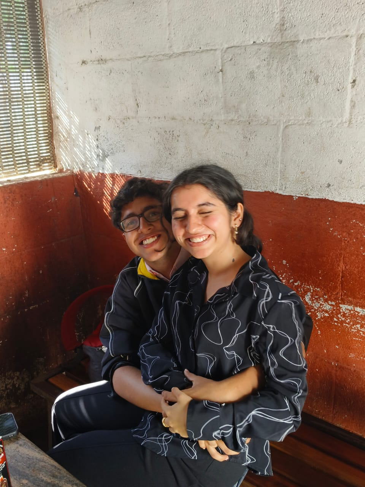
our little soundtrack ♡
Always
Daniel Caesar
0:000:00
Press play whenever you’re ready.
Let this play while you wander.
little pieces of us
Moments I keep replaying.
Tap a photo. Stay in the moment a little longer.
a few things I never want to forget ↴
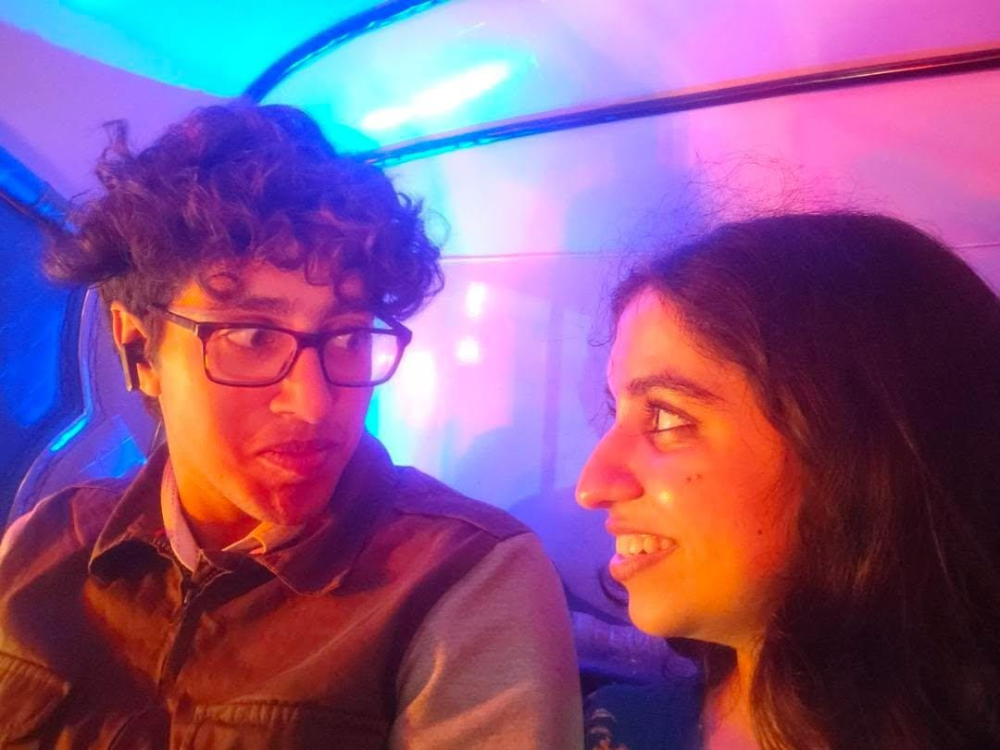
Auto Rides :)
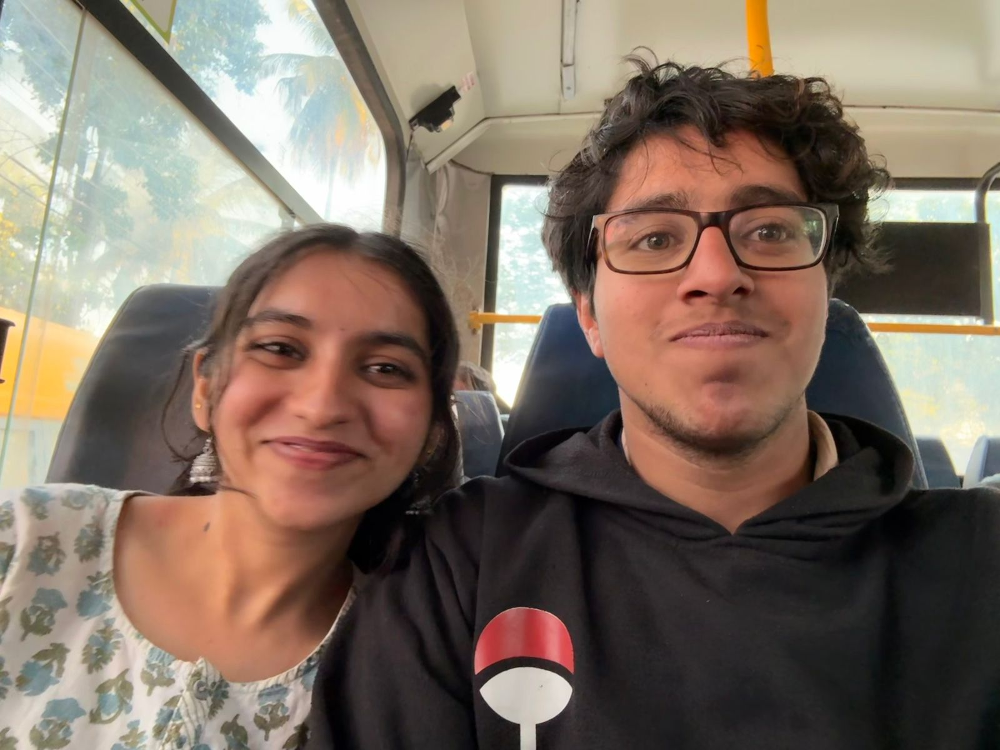
Farhan Akhtar sang
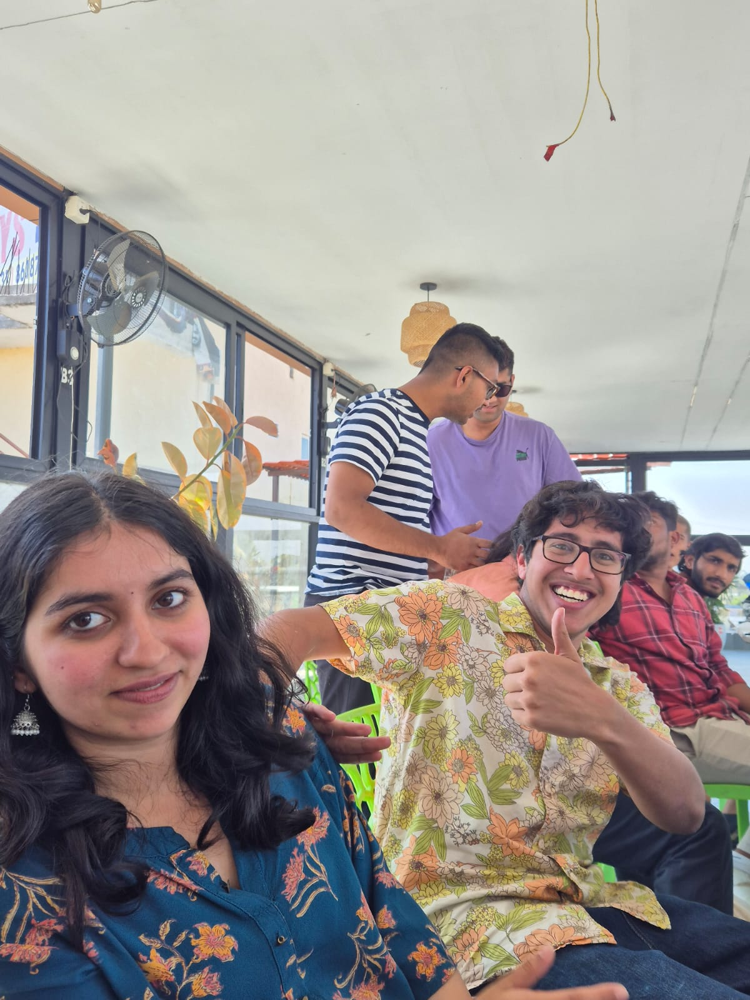
OH MY LORD F16
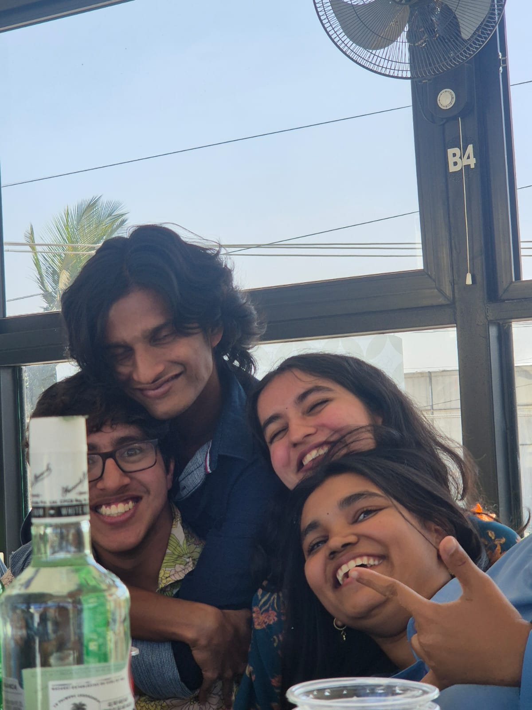
NIMHANS Admission photo
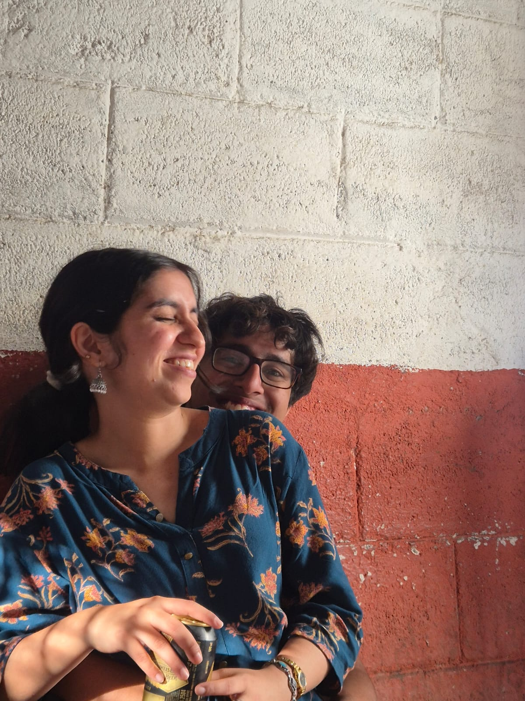
worth keeping twice ♡
a favourite view ♡
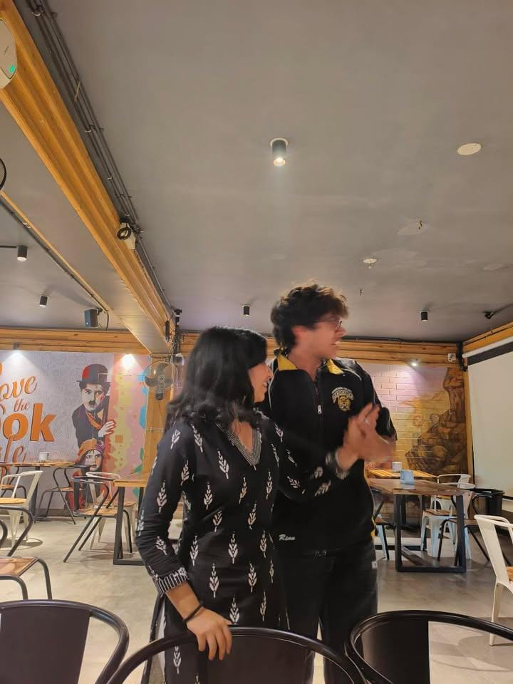
a moment to come back to ♡
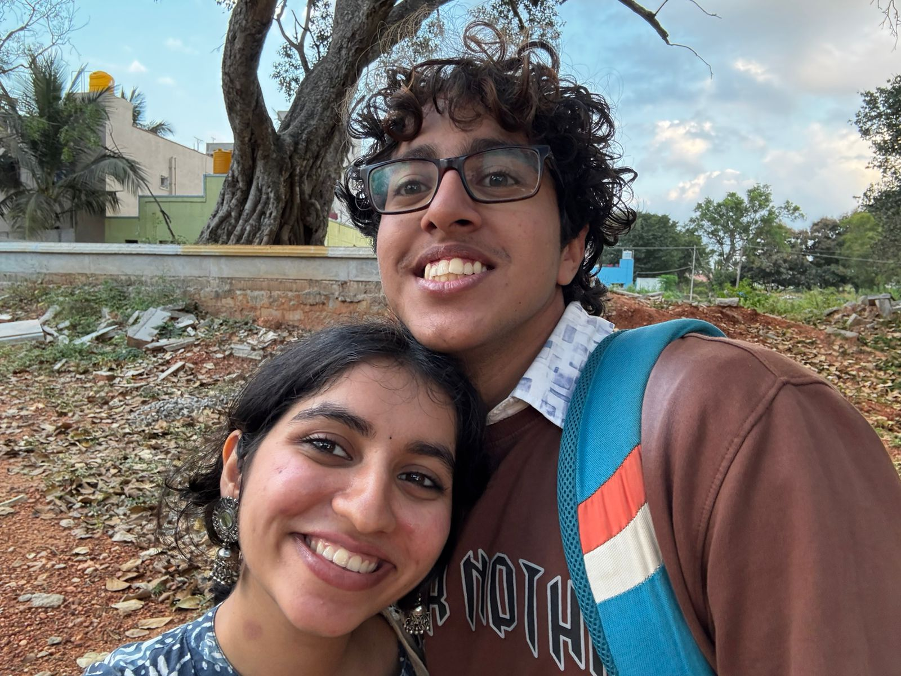
let’s stay a little longer ♡
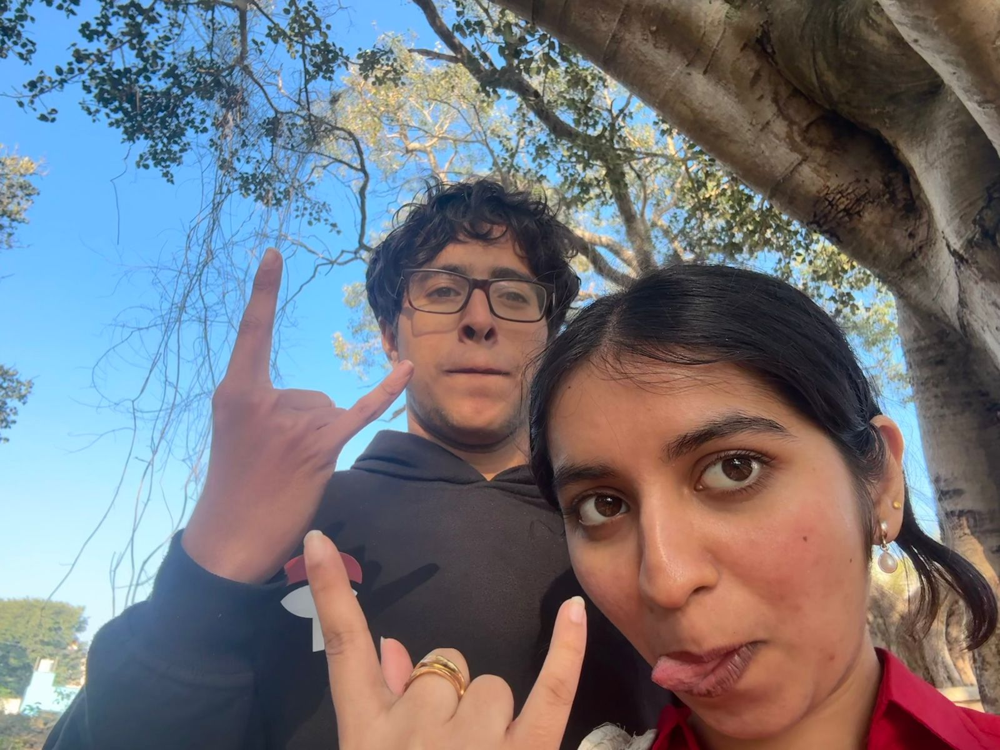
you, on repeat ♡
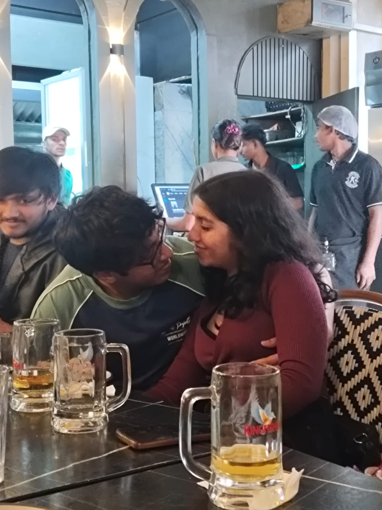
just us, just this ♡
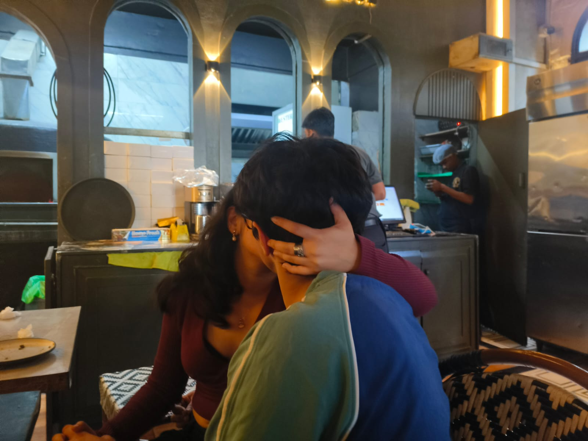
a little closer ♡
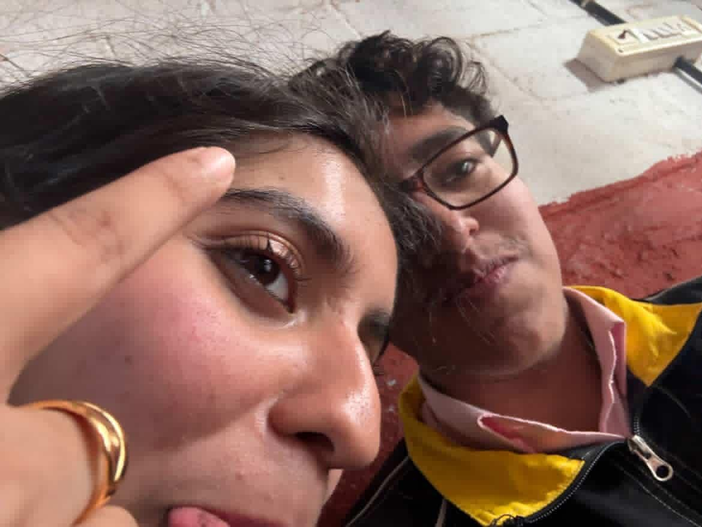
perfectly imperfect ♡
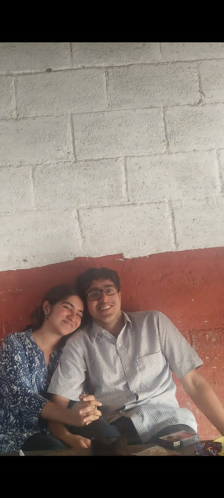
keep this one forever ♡
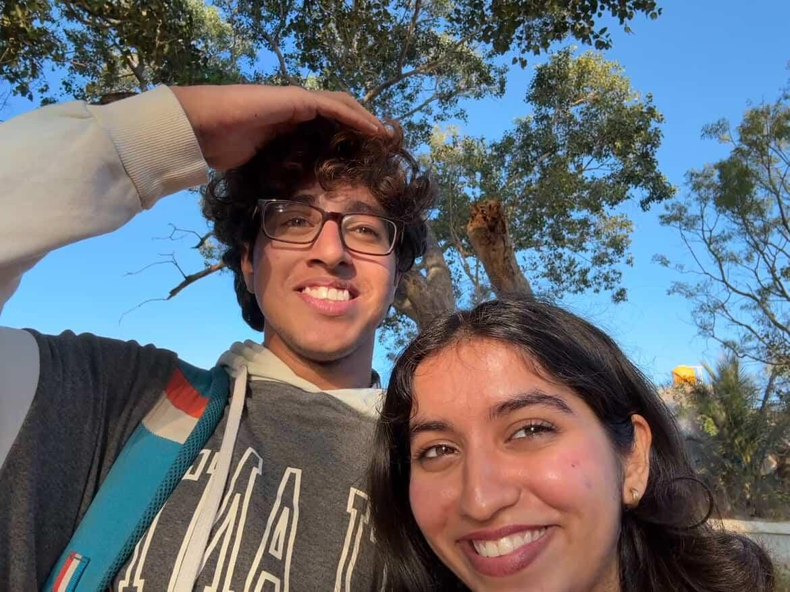
more of this, please ♡
it’s the little things
What I want more of.
More of the little things you want to tell me. I want to hear them.
More songs to send you with “this made me think of you.”
More photos that don’t need to be perfect to mean everything.
one last thing, before you go
This one’s for you.
A letter, sealed with loveTap to open ♡
Hey, you.
I wanted to make you something you could come back to. A few photos, a couple of songs, and a little place that exists because you matter to me.
I’m still finding the words for everything I want to say. But I can start here: I love you, and I want to keep finding ways to show you.
I want to hear about your day. I want to make things with you, save more photos, and keep making room for the little moments in between.
There’s room here for more. More music, more memories, more of us. For now, I hope this makes you smile.
With love,
Saawan ♡
More memories to come.